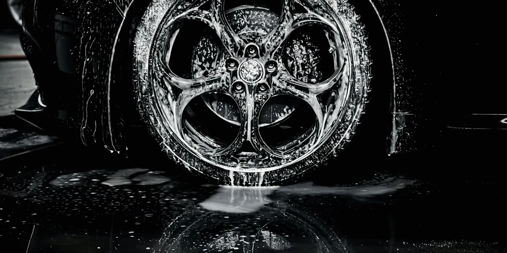

Glass, wheels & metal
Glass & wheel coatings.
The details that make a clean car look finished: ceramic coatings and polishing for windshields, all your glass, wheels, tires, exhaust tips and chrome.
Add it to a quotePrices for your vehicle
Coat it, or polish it.
Coatings make glass, trim and wheels shed water and grime, at two levels: quick Cerakote protection or a multi-year Gyeon or Gtechniq coating. Polishing removes what's already etched in. Every coating is cheaper added to a detail than booked on its own.
| Quick protection · Cerakote ceramic | Price |
|---|---|
| Windshield ceramic coatingCerakote ceramic glass coating — Cerakote backs it with a multi-season guarantee; rain beads off, easier ice & bug removal · $59 with any detail | $79 |
| All-glass ceramic coating — windshield, side & rear glass, mirrors (sunroof on request)Cerakote ceramic glass coating · $149 with any detail | $179 |
| Wheel ceramic coating — faces, on the car (4 wheels), with any detailCerakote ceramic wheel spray — repels brake dust between washes | $69 |
| Ceramic tire coatingCerakote or Gyeon tire coating — the makers rate them in washes, not years (Cerakote: up to 10× longer than leading tire dressings); non-greasy satin finish · the same price with any detail | $59 |
| Faded trim restored — heavy fadingCerakote ceramic trim coating — Cerakote guarantees it for 200 washes | $79 |
| Polishing | Price |
|---|---|
| Windshield polish — etched water spots, wiper haze, light etching | $99 |
| All-glass polish | $199 |
| Exhaust tips | $40 / pair |
| Chrome trim polish — window trim, emblems & handles | $59 |
| Heavy chrome polish — grille, bumpers, mirror caps & running boards | $99 |
| Polished or chrome wheels (4) | from $99 |
Two levels
Quick protection, or a multi-year coating.
Quick protection (the table above) is Cerakote's wipe-on ceramic: fast, affordable, renewed every so often. A multi-year coating is a true Gyeon or Gtechniq coating that bonds to the surface and lasts much longer between applications. Durability is each maker's own rating. Prices below are for a sedan, on their own and with any detail.
Glass
Multi-year glass coating
- Gtechniq
- Rated by the makerup to 2 years on the glass.
- Gyeon
- Rated by the makerup to 24 months / 50,000 km; wiper- and washer-fluid resistant.
Windshield$149 on its own · $129 with any detail
All glass$249 on its own · $219 with any detail
Trim
Multi-year trim coating
- Gtechniq
- Rated by the makerup to 2 years of protection from UV and fading.
- Gyeon
- Rated by the makerup to 36 months / 50,000 km; satin-to-matte, deepens faded plastics.
Black plastics & trim$129 with any detail
Wheels & tires
Multi-year wheel coating
- Gtechniq
- Rated by the makerup to 2 years of durability, inside and out; withstands 600 °C and keeps brake dust from bonding.
- Gyeon
- Rated by the makerup to 18 months / 45,000 km; heat resistant, self-cleaning.
Wheel faces, on the car (4)$199 on its own · $179 with any detail
Wheels off — faces, barrels & calipersfrom $399, quoted in person — garage required. Text me for a quote.
Brake calipers (4)$79 — most useful on performance and European cars with heavy brake dust. It needs the wheels off or open-spoke access to the calipers; included in a wheels-off coating.
TiresRubber flexes and wears, so tire coatings last washes, not years. The ceramic tire coating in the table above is the one level.
With any detailing service: quick (Cerakote) windshield ceramic coating $59 or all-glass ceramic coating $149; multi-year windshield $129 or all glass $219 (windshield, side & rear glass and mirrors; all-glass replaces the windshield-only coat, and a multi-year coating replaces the quick one), the same price at every level. Inside, a fabric & Alcantara coating for seats and carpets is $79 (never the same day as shampoo or extraction) and a leather coating is $129 — what the makers say they do.
Getting a paint coating? Add every surface — all glass, trim and wheel faces with multi-year coatings, plus tires — as Complete: coat every surface, $550 on a sedan (saves $36). Find your coating for the whole plan.
Before a glass coating: a coating bonds to clean, smooth glass and seals in whatever is on it, so water spots and wiper haze come off first — light spots chemically (water spot removal, from $45), etched spots by polishing (windshield polish from $99, all-glass polish from $179). I check the glass at the walkaround and quote any prep before starting. Deep scratches and rock chips can't be polished out of glass — I'll tell you honestly before starting.
Why it works
Less for dirt to hold onto.
A ceramic glass coating fills the microscopic texture of the glass, so rain beads and rolls off at speed, and ice and bugs come off easier. On wheels, it gives brake dust far less to bond to, so it rinses off instead of baking on. How coatings work.
Hard-water spots are minerals left behind when water evaporates. If they sit in the sun, they can etch into the glass; that's when a polish is needed before any coating. More on hard water.
Questions
Glass & wheels.
Can you remove water spots from sprinklers or hard water?
Usually, yes. Light spots sitting on the surface come off chemically (from $45). Spots baked on by the sun need a stronger mineral remover and clay (from $95). If rings are still there after that, the minerals have etched into the glass or clear coat and need machine polishing — I'll show you a test spot and quote it before going further. Afterward I seal the surface so spots don't bond as easily next time.
My car has Alcantara, chrome, carbon or a soft top. Is that extra?
Only when there's enough of it to need its own products and time. These are never part of a level — they cost the same whichever level you choose, and your quote shows the price for your vehicle. Large Alcantara or microsuede areas (seats and door inserts; an Alcantara headliner is part of Headliner cleaning) are from $30: a dedicated cleaner, almost no moisture, no steam or heat, and the nap brushed back up by hand. Chrome window trim, emblems and handles are from $59, polished by hand and sealed; a lot of chrome — grille, bumpers, mirror caps, running boards — is from $99, with the trim included. A convertible soft top is from $70: fabric is cleaned and reproofed, vinyl is cleaned and UV-protected. Exposed carbon fiber is from $49, cleaned and sealed with no polish or abrasives. Small pieces — a shift boot, steering-wheel trim, a carbon mirror cap, a few chrome emblems — are included at no charge. Genuine suede, nubuck, aniline leather and classic single-stage paint are quoted after a test spot, because water can mark those leathers and old paint can react to polish.

Book
A price for your exact car, up front.
Pick your vehicle and services online, or text me a few photos and I'll tell you what's likely needed — confirmed when I see the vehicle.
(385) 218-0990